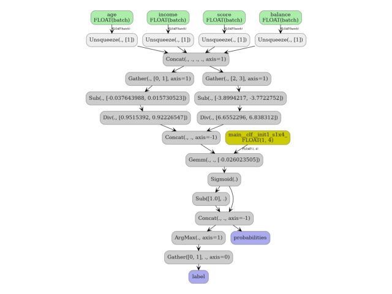

Note
Go to the end to download the full example code.
DataFrame input to a Pipeline with ColumnTransformer#
This example shows how to convert a scikit-learn
Pipeline whose first step is a
ColumnTransformer when the training data is a
pandas.DataFrame.
When a DataFrame is passed as the dummy input to
yobx.sklearn.to_onnx(), each column is registered as a separate
1-D ONNX graph input named after the column. An
Unsqueeze + Concat node sequence assembles the per-column tensors
back into the 2-D matrix that the rest of the pipeline expects.
The ColumnTransformer may reference columns by
name (strings) rather than by integer position — yobx resolves the
names to integer indices using feature_names_in_ that scikit-learn
stores after fitting.
This example covers:
ColumnTransformer only — two scalers applied to different named columns.
Pipeline — ColumnTransformer followed by a classifier, taking a DataFrame as input.
Validation — confirming that ONNX and scikit-learn produce identical predictions.
Visualisation — inspecting the ONNX graph.
See DataFrame Input to a Pipeline with ColumnTransformer for a deeper explanation of how DataFrame inputs are handled during conversion.
import numpy as np
import pandas as pd
import onnxruntime
from sklearn.compose import ColumnTransformer
from sklearn.linear_model import LogisticRegression
from sklearn.pipeline import Pipeline
from sklearn.preprocessing import MinMaxScaler, StandardScaler
from yobx.doc import plot_dot
from yobx.sklearn import to_onnx
1. Build a labelled dataset#
We create a small DataFrame with four named columns that
mimic a typical tabular dataset: two numeric features that will be
standardised and two that will be min-max scaled.
rng = np.random.default_rng(0)
n_samples = 120
X_raw = rng.standard_normal((n_samples, 4)).astype(np.float32)
df = pd.DataFrame(X_raw, columns=["age", "income", "score", "balance"])
y = ((df["age"] + df["income"]) > 0).astype(int).to_numpy()
print("Dataset shape:", df.shape)
print("Column dtypes:\n", df.dtypes)
print("Class distribution:", np.bincount(y))
Dataset shape: (120, 4)
Column dtypes:
age float32
income float32
score float32
balance float32
dtype: object
Class distribution: [58 62]
2. Build and fit the pipeline#
ColumnTransformer references columns by name:
ageandincome→StandardScalerscoreandbalance→MinMaxScaler
A LogisticRegression classifier is appended
as the final step.
ct = ColumnTransformer(
[("std", StandardScaler(), ["age", "income"]), ("mm", MinMaxScaler(), ["score", "balance"])]
)
pipe = Pipeline([("preprocessor", ct), ("clf", LogisticRegression(max_iter=500))])
# max_iter=500 avoids ConvergenceWarnings on some random seeds.
pipe.fit(df, y)
print("\nPipeline steps:")
for step_name, step in pipe.steps:
print(f" {step_name}: {step}")
Pipeline steps:
preprocessor: ColumnTransformer(transformers=[('std', StandardScaler(), ['age', 'income']),
('mm', MinMaxScaler(), ['score', 'balance'])])
clf: LogisticRegression(max_iter=500)
3. Convert to ONNX using a DataFrame as the dummy input#
Passing df directly to to_onnx() triggers
per-column ONNX inputs. The ColumnTransformer’s string column selectors
are resolved to integer positions via feature_names_in_ that
scikit-learn sets during fit.
onx = to_onnx(pipe, (df,))
print("\nONNX graph inputs:")
for inp in onx.proto.graph.input:
shape = inp.type.tensor_type.shape
dims = [d.dim_param or d.dim_value for d in shape.dim]
print(f" {inp.name!r:12s} shape={dims}")
print("\nONNX graph outputs:", [out.name for out in onx.proto.graph.output])
print("Number of nodes :", len(onx.proto.graph.node))
ONNX graph inputs:
'age' shape=['batch', 1]
'income' shape=['batch', 1]
'score' shape=['batch', 1]
'balance' shape=['batch', 1]
ONNX graph outputs: ['label', 'probabilities']
Number of nodes : 13
4. Run the ONNX model and compare with scikit-learn#
The ONNX runtime expects one 1-D array per column, matching the graph inputs registered during conversion.
X_test_raw = rng.standard_normal((30, 4)).astype(np.float32)
df_test = pd.DataFrame(X_test_raw, columns=df.columns)
feed = {col: df_test[[col]].values for col in df.columns}
sess = onnxruntime.InferenceSession(
onx.proto.SerializeToString(), providers=["CPUExecutionProvider"]
)
label_onnx, proba_onnx = sess.run(None, feed)
label_sk = pipe.predict(df_test)
proba_sk = pipe.predict_proba(df_test).astype(np.float32)
print("\nFirst 5 labels (sklearn):", label_sk[:5])
print("First 5 labels (ONNX) :", label_onnx[:5])
assert np.array_equal(label_sk, label_onnx), "Label mismatch!"
assert np.allclose(proba_sk, proba_onnx, atol=1e-5), "Probability mismatch!"
print("\nAll predictions match ✓")
First 5 labels (sklearn): [1 0 1 0 1]
First 5 labels (ONNX) : [1 0 1 0 1]
All predictions match ✓
5. Standalone ColumnTransformer (no classifier)#
The same pattern works when converting only the preprocessing part.
onx_ct = to_onnx(ct, (df,))
print("\nColumnTransformer ONNX inputs:")
for inp in onx_ct.proto.graph.input:
print(f" {inp.name!r}")
feed_ct = {col: df_test[[col]].values for col in df.columns}
(ct_out_onnx,) = onnxruntime.InferenceSession(
onx_ct.proto.SerializeToString(), providers=["CPUExecutionProvider"]
).run(None, feed_ct)
ct_out_sk = ct.transform(df_test).astype(np.float32)
assert np.allclose(ct_out_sk, ct_out_onnx, atol=1e-5), "ColumnTransformer output mismatch!"
print("ColumnTransformer output matches sklearn ✓")
ColumnTransformer ONNX inputs:
'age'
'income'
'score'
'balance'
ColumnTransformer output matches sklearn ✓
6. Visualize the ONNX graph#
The graph starts with one Unsqueeze node per column input, followed
by a single Concat that assembles the 2-D matrix handed to the
ColumnTransformer’s Gather nodes.
plot_dot(onx)

Total running time of the script: (0 minutes 0.317 seconds)
Related examples


Exporting sklearn estimators as ONNX local functions